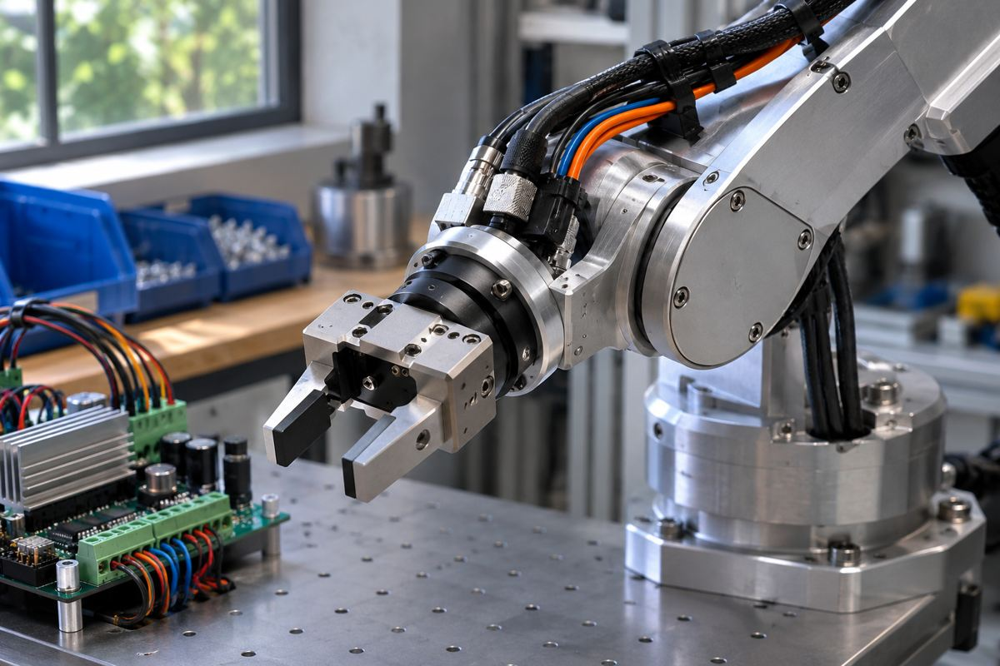

电子设备 / EXPLAINED
MIPS Actus将控制、推理和通信放入机器人关节
实时处理与时间敏感网络，面向AI决策到电机动作之间的环节。

MIPS在11月9日的官方公告中介绍Actus参考平台进展，结合两颗Atlas M8500实时RISC-V处理器、电机控制加速、边缘推理和通信。这不是完整人形机器人上市，而是为机器人开发者提供精密动作的控制基础。electronica展示日期为11月10日至13日。
MIPS供应处理器技术与平台，此次使用“MIPS, by GF”名称。GF即半导体制造商格芯。Actus基于其FDX FD-SOI技术，处理小型关节的空间、功耗和热量限制。机械臂越靠近末端，电机、传感器、电路的空间越紧。中央决策再智能，关节不能及时响应也无法实现预期运动。
实时控制强调在期限内反复读取传感器并下发电机指令，而非仅有较高平均速度。RISC-V是开放指令集标准，不表示所有相关芯片性能和外设相同。MIPS称硬件多线程能减少中断时的任务切换负担，具体收益仍取决于代码与控制周期。
公司称用于电机控制的三角函数专用加速，相比标准库超过16倍。这是特定运算比较，不是整条机械臂快16倍。100皮秒级PWM描述电力脉冲宽度控制的精细程度，也不能直接当作指尖位置误差。
平台集成千兆以太网、三端口TSN及CAN-FD。TSN帮助时间关键数据以可预测方式传递，在关节交换位置和转矩时，延迟波动很重要。但支持协议不等于整个机器人已同步，网络布局和其他控制器也要符合时序条件。
边缘推理意在关节附近处理数据，而非全部发往远程服务器。公司提出同芯片运行传感器融合和预测维护模型，并提供功能安全支持及后量子密码安全模块。安全支持不代表成品机器人完成所有认证，机械结构、软件和整体系统仍需验证。
开发路线从硅片到位前的虚拟平台开始，后续迁至Actus-1评估板和SDK。具体量产供应日及价格未公开。编辑部认为，关节控制周期和网络应与AI能力一起设计。公告不是独立机器人测试，因此未补充保证节能比例或实际任务精度。